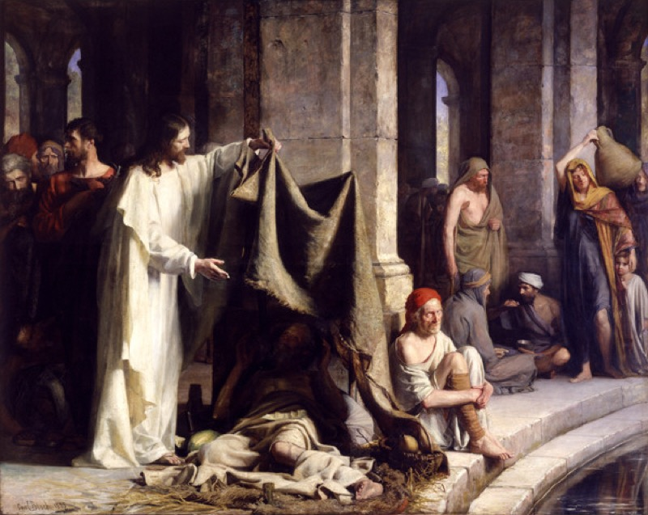

<!DOCTYPE html>
<html lang="en">
<head>
  <meta charset="UTF-8">
  <meta name="viewport" content="width=device-width, initial-scale=1, viewport-fit=cover">
  <title>Discover Your Spiritual Gift — A Biblical Assessment</title>
  <link rel="icon" href="favicon.ico">
  <link rel="preconnect" href="https://fonts.googleapis.com">
  <link rel="preconnect" href="https://fonts.gstatic.com" crossorigin>
  <link href="https://fonts.googleapis.com/css2?family=Poppins:wght@400;500;600;700;800&family=Lora:ital,wght@0,600;1,400&display=swap" rel="stylesheet">
  <style>
    :root {
      --bg:#FEF8E4; --card:#FFFDF0; --accent:#1B4B8A; --red:#8B1A1A;
      --gold:#B8870B; --text:#160E05; --muted:#7A6240;
      --btn:#F5E9C8; --btn-h:#EDD99E;
      --sel-bg:rgba(27,75,138,.09); --sel-bd:#1B4B8A;
      --shadow:0 2px 18px rgba(180,140,60,.18);
      --border:rgba(27,75,138,.13);
    }
    *,*::before,*::after{box-sizing:border-box;margin:0;padding:0}
    body{
      background-color:var(--bg);
      min-height:100vh;font-family:'Poppins',-apple-system,sans-serif;
      color:var(--text);-webkit-font-smoothing:antialiased;overflow-x:hidden}
    #app{max-width:450px;margin:0 auto;min-height:100vh;
      display:flex;flex-direction:column;padding:0 16px 60px}
    .screen{animation:fadeIn .22s ease}
    @keyframes fadeIn{from{opacity:0;transform:translateY(8px)}to{opacity:1;transform:none}}

    /* HEADER */
    .hdr{display:flex;justify-content:center;align-items:center;gap:8px;padding:20px 0 0}
    .logo{font-size:16px;font-weight:800;letter-spacing:.5px;color:var(--accent)}
    .logo-cross{color:var(--red);font-size:18px}

    /* PROGRESS BAR */
    .prog-wrap{width:85%;max-width:333px;margin:36px auto 0}
    .prog-track{position:relative;display:flex;width:100%;height:3px;
      background:#DDD5C4;border-radius:3px;align-items:center}
    .p-sec{position:relative;flex:1;height:3px}
    .p-fill{position:absolute;top:0;left:0;height:3px;background:var(--accent);
      border-radius:3px;transition:width .35s ease}
    .p-dot{position:absolute;right:-9px;top:50%;transform:translateY(-50%);
      width:18px;height:18px;border-radius:50%;
      display:flex;align-items:center;justify-content:center;
      font-size:10px;font-weight:700;z-index:2}
    .p-dot.done{background:var(--accent);color:#fff}
    .p-dot.active{background:var(--accent);color:#fff;width:20px;height:20px;right:-10px}
    .p-dot.next{background:#DDD5C4;color:var(--muted);border:1.5px solid #C4B99E}
    .p-lbl{position:absolute;top:-22px;left:50%;transform:translateX(-50%);
      white-space:nowrap;font-size:10px;font-weight:700;color:var(--accent);
      text-transform:uppercase;letter-spacing:.5px}

    /* BACK */
    .back{background:none;border:none;color:var(--muted);font-family:inherit;
      font-size:14px;cursor:pointer;padding:10px 0 0;
      display:flex;align-items:center;gap:5px;align-self:flex-start}
    .back:hover{color:var(--text)}

    /* CROSS DECORATION */
    .cross-deco{display:flex;justify-content:center;padding:28px 0 0;font-size:28px;color:var(--red);opacity:.7}

    /* PRE-QUIZ */
    .pre{display:flex;flex-direction:column;align-items:center;padding:24px 0 32px;gap:20px}
    .pre-title{font-size:26px;font-weight:700;line-height:32px;
      letter-spacing:-.5px;text-align:center;color:var(--text)}
    .pre-sub{font-size:14px;color:var(--muted);text-align:center;line-height:1.6}
    .pre-img{width:100%;max-width:320px;border-radius:14px;object-fit:cover;max-height:180px;
      box-shadow:var(--shadow)}
    .g-grid{display:grid;grid-template-columns:1fr 1fr;gap:12px;width:100%}
    .g-btn{background:var(--btn);border:1.5px solid #C4B99E;
      border-radius:14px;color:var(--text);font-family:inherit;
      font-size:16px;font-weight:500;padding:20px 12px;cursor:pointer;text-align:center;
      transition:border-color .15s,background .15s;box-shadow:var(--shadow)}
    .g-btn:hover{background:var(--btn-h);border-color:var(--accent)}
    .g-btn.sel{background:var(--sel-bg);border-color:var(--sel-bd);color:var(--accent);font-weight:700}
    .a-grid{display:grid;grid-template-columns:1fr 1fr;gap:12px 8px;width:100%}
    .a-btn{background:var(--btn);border:1.5px solid #C4B99E;
      border-radius:14px;color:var(--text);font-family:inherit;
      font-size:16px;font-weight:500;padding:17px 12px;cursor:pointer;
      transition:border-color .15s,background .15s;box-shadow:var(--shadow)}
    .a-btn:hover{background:var(--btn-h);border-color:var(--accent)}
    .a-btn.sel{background:var(--sel-bg);border-color:var(--sel-bd);color:var(--accent);font-weight:700}

    /* QUESTION */
    .q-area{display:flex;flex-direction:column;align-items:center;
      padding:22px 0 16px;gap:16px;width:100%}
    .q-verse{font-family:'Lora',serif;font-style:italic;font-size:13px;
      color:var(--gold);text-align:center;padding:0 8px}
    .q-text{font-size:21px;font-weight:700;line-height:28px;
      letter-spacing:-.4px;text-align:center;width:100%;color:var(--text)}
    .q-img{width:100%;max-width:320px;border-radius:14px;
      object-fit:cover;max-height:200px;box-shadow:var(--shadow)}
    .answers{display:flex;flex-direction:column;gap:10px;width:100%}
    .ans{background:var(--btn);border:1.5px solid #C4B99E;
      border-radius:14px;color:var(--text);font-family:inherit;
      font-size:15px;font-weight:500;line-height:22px;
      padding:16px 20px;cursor:pointer;text-align:left;
      transition:border-color .15s,background .15s,transform .1s;width:100%;
      box-shadow:0 1px 6px rgba(0,0,0,.05)}
    .ans:hover{background:var(--btn-h);border-color:var(--accent);transform:translateY(-1px)}
    .ans:active{transform:translateY(0)}
    .ans.sel{background:var(--sel-bg);border-color:var(--sel-bd);color:var(--accent);font-weight:600}

    /* MULTI */
    .multi-hint{font-size:12px;color:var(--muted);text-align:center;width:100%}
    .continue-btn{background:var(--accent);color:#fff;border:none;border-radius:14px;
      font-family:inherit;font-size:16px;font-weight:700;padding:16px;
      cursor:pointer;width:100%;transition:opacity .15s,transform .1s;margin-top:4px;
      box-shadow:0 4px 14px rgba(27,75,138,.3)}
    .continue-btn:hover{opacity:.9;transform:translateY(-1px)}
    .continue-btn:disabled{opacity:.4;cursor:not-allowed;transform:none}

    /* STATEMENT */
    .stmt-lbl{font-size:13px;color:var(--muted);font-weight:500;text-align:center}
    .stmt-card{background:var(--btn);border-radius:14px;padding:18px 20px;width:100%;
      font-family:'Lora',serif;font-size:16px;line-height:26px;
      border-left:3px solid var(--gold);font-style:italic;color:var(--text)}

    /* SCRIPTURE BLOCK */
    .scripture{background:var(--btn);border-radius:12px;padding:14px 18px;width:100%;
      border-left:3px solid var(--red)}
    .scripture-text{font-family:'Lora',serif;font-size:14px;font-style:italic;
      line-height:22px;color:var(--text);margin-bottom:4px}
    .scripture-ref{font-size:11px;font-weight:700;color:var(--red);
      text-transform:uppercase;letter-spacing:.5px}

    /* NAME INPUT */
    .name-input{background:#fff;border:1.5px solid #C4B99E;
      border-radius:14px;color:var(--text);font-family:inherit;
      font-size:18px;font-weight:500;padding:18px 20px;width:100%;
      outline:none;transition:border-color .2s;box-shadow:var(--shadow)}
    .name-input::placeholder{color:#C4B99E}
    .name-input:focus{border-color:var(--accent)}

    /* POPUP */
    .overlay{position:fixed;inset:0;background:rgba(22,14,5,.65);
      z-index:100;display:flex;align-items:center;justify-content:center;padding:20px}
    .popup{background:#FFFEFE;border-radius:22px;padding:28px 24px;
      width:100%;max-width:400px;display:flex;flex-direction:column;gap:16px;
      animation:popIn .3s cubic-bezier(.34,1.56,.64,1);
      border-top:4px solid var(--red)}
    @keyframes popIn{from{transform:scale(.85);opacity:0}to{transform:scale(1);opacity:1}}
    .popup-tag{font-size:11px;font-weight:700;color:var(--red);
      text-transform:uppercase;letter-spacing:1px}
    .popup-cross{font-size:28px;text-align:center;color:var(--red)}
    .popup-title{font-size:20px;font-weight:800;line-height:26px;
      letter-spacing:-.4px;color:var(--text)}
    .popup-text{font-size:14px;color:var(--muted);line-height:22px}
    .popup-verse{font-family:'Lora',serif;font-size:14px;font-style:italic;
      color:var(--text);border-left:3px solid var(--gold);
      padding-left:12px;line-height:22px}
    .popup-verse-ref{font-size:11px;font-weight:700;color:var(--gold);
      margin-top:4px;text-transform:uppercase;letter-spacing:.5px}
    .popup-quote{font-family:'Lora',serif;font-size:16px;font-weight:600;
      line-height:26px;font-style:italic;
      border-left:3px solid var(--accent);padding-left:14px;color:var(--text)}
    .popup-person{display:flex;align-items:center;gap:12px}
    .popup-avatar{width:44px;height:44px;border-radius:50%;object-fit:cover}
    .popup-name-role p:first-child{font-size:14px;font-weight:700;color:var(--text)}
    .popup-name-role p:last-child{font-size:12px;color:var(--muted)}
    .popup-close{background:var(--accent);color:#fff;border:none;border-radius:14px;
      font-family:inherit;font-size:16px;font-weight:700;padding:16px;
      cursor:pointer;width:100%;transition:opacity .15s;
      box-shadow:0 4px 14px rgba(27,75,138,.3)}
    .popup-close:hover{opacity:.9}

    /* LOADING */
    .loading{display:flex;flex-direction:column;align-items:center;
      justify-content:center;min-height:100vh;gap:24px;padding:20px;text-align:center}
    .l-cross{font-size:40px;color:var(--red);margin-bottom:4px}
    .l-title{font-size:24px;font-weight:700;letter-spacing:-.4px;color:var(--text)}
    .l-sub{font-size:14px;color:var(--muted);line-height:22px;max-width:280px}
    .l-bar-wrap{width:100%;max-width:280px;height:6px;
      background:#DDD5C4;border-radius:6px;overflow:hidden}
    .l-bar{height:6px;background:var(--accent);border-radius:6px;
      width:0%;animation:lp 5s ease forwards}
    @keyframes lp{from{width:0%}to{width:100%}}
    .l-steps{display:flex;flex-direction:column;gap:14px;
      width:100%;max-width:280px;text-align:left}
    .lstep{display:flex;align-items:center;gap:10px;font-size:14px;
      color:#C4B99E;opacity:0;transition:opacity .4s}
    .lstep.on{opacity:1;color:var(--text)}
    .lstep-dot{width:8px;height:8px;border-radius:50%;
      background:#DDD5C4;flex-shrink:0;transition:background .3s}
    .lstep.on .lstep-dot{background:var(--accent)}

    /* LOADING QUESTIONS */
    .lq-overlay{position:fixed;inset:0;z-index:50;
      display:flex;align-items:flex-end;padding:0 16px 40px;pointer-events:none}
    .lq-card{background:#FFFEFE;border-radius:20px;padding:22px 20px;
      width:100%;max-width:450px;margin:0 auto;
      display:flex;flex-direction:column;gap:14px;
      opacity:0;transform:translateY(30px);
      transition:opacity .4s,transform .4s;pointer-events:all;
      box-shadow:var(--shadow);border-top:3px solid var(--accent)}
    .lq-card.show{opacity:1;transform:translateY(0)}
    .lq-text{font-size:16px;font-weight:600;line-height:24px;color:var(--text)}
    .lq-btns{display:flex;gap:10px}
    .lq-yes,.lq-no{flex:1;background:var(--btn);border:1.5px solid #C4B99E;
      border-radius:12px;color:var(--text);font-family:inherit;
      font-size:15px;font-weight:600;padding:14px;cursor:pointer;
      transition:background .15s,border-color .15s}
    .lq-yes:hover,.lq-no:hover{background:var(--btn-h);border-color:var(--accent)}

    /* EMAIL */
    .email-screen{display:flex;flex-direction:column;align-items:center;
      padding:50px 0 40px;gap:20px;text-align:center}
    .email-badge{background:rgba(27,75,138,.08);border:1px solid rgba(27,75,138,.2);
      border-radius:24px;padding:6px 16px;font-size:13px;font-weight:600;
      color:var(--accent);letter-spacing:.3px}
    .email-cross{font-size:36px;color:var(--red)}
    .email-title{font-size:23px;font-weight:800;line-height:30px;
      letter-spacing:-.5px;color:var(--text)}
    .email-sub{font-size:14px;color:var(--muted);line-height:20px;max-width:300px}
    .email-verse{font-family:'Lora',serif;font-size:13px;font-style:italic;
      color:var(--gold);padding:0 8px}
    .email-input{background:#fff;border:1.5px solid #C4B99E;
      border-radius:14px;color:var(--text);font-family:inherit;
      font-size:16px;font-weight:500;padding:18px 20px;width:100%;
      outline:none;transition:border-color .2s;box-shadow:var(--shadow)}
    .email-input::placeholder{color:#C4B99E}
    .email-input:focus{border-color:var(--accent)}
    .email-submit{background:var(--accent);color:#fff;border:none;border-radius:14px;
      font-family:inherit;font-size:17px;font-weight:700;padding:18px;
      cursor:pointer;width:100%;transition:opacity .15s,transform .1s;
      box-shadow:0 4px 14px rgba(27,75,138,.3)}
    .email-submit:hover{opacity:.9;transform:translateY(-1px)}
    .email-note{font-size:12px;color:var(--muted)}

    /* RESULTS */
    .results{display:flex;flex-direction:column;align-items:center;
      padding:36px 0 80px;gap:22px;width:100%}
    .r-badge{background:rgba(27,75,138,.08);border:1px solid rgba(27,75,138,.2);
      border-radius:24px;padding:6px 16px;font-size:13px;font-weight:600;
      color:var(--accent);letter-spacing:.3px}
    .r-title{font-size:26px;font-weight:800;line-height:32px;
      letter-spacing:-.5px;text-align:center;color:var(--text)}
    .r-sub{font-size:14px;color:var(--muted);text-align:center;line-height:20px}
    .gift-reveal{background:#fff;border-radius:20px;padding:24px;
      width:100%;text-align:center;border:1.5px solid rgba(27,75,138,.2);
      box-shadow:var(--shadow)}
    .gift-cross{font-size:28px;color:var(--red);margin-bottom:6px}
    .gift-label{font-size:11px;font-weight:700;color:var(--accent);
      text-transform:uppercase;letter-spacing:1px;margin-bottom:6px}
    .gift-name{font-size:30px;font-weight:800;margin-bottom:8px;
      letter-spacing:-.5px;color:var(--text)}
    .gift-verse{font-family:'Lora',serif;font-size:13px;color:var(--gold);
      margin-bottom:10px;font-style:italic}
    .gift-desc{font-size:14px;color:var(--muted);line-height:22px}
    .score-section-title{font-size:13px;font-weight:700;color:var(--muted);
      text-transform:uppercase;letter-spacing:.8px;align-self:flex-start}
    .score-row{display:flex;flex-direction:column;gap:14px;width:100%}
    .score-item{display:flex;flex-direction:column;gap:6px}
    .score-lr{display:flex;justify-content:space-between}
    .score-lbl{font-size:13px;font-weight:600;color:var(--muted)}
    .score-val{font-size:13px;font-weight:700;color:var(--accent)}
    .score-track{width:100%;height:6px;background:#DDD5C4;border-radius:6px;overflow:hidden}
    .score-fill{height:6px;background:var(--accent);border-radius:6px;transition:width 1s ease}
    .divider{width:100%;height:1px;background:#E0D8CC}
    .experts{display:flex;flex-direction:column;gap:16px;width:100%}
    .exp-title{font-size:11px;font-weight:700;color:var(--muted);
      text-align:center;text-transform:uppercase;letter-spacing:1px}
    .exp-row{display:flex;gap:14px}
    .exp-card{flex:1;background:#fff;border-radius:14px;padding:14px;
      display:flex;flex-direction:column;align-items:center;gap:8px;
      box-shadow:var(--shadow)}
    .exp-img{width:56px;height:56px;border-radius:50%;object-fit:cover}
    .exp-name{font-size:12px;font-weight:700;text-align:center;color:var(--text)}
    .exp-role{font-size:11px;color:var(--muted);text-align:center}
    .uni-row{display:flex;justify-content:center;gap:24px;align-items:center}
    .uni-logo{height:26px;opacity:.55;object-fit:contain}
    .end-sec{position:relative;width:100%;border-radius:20px;overflow:hidden;
      background:var(--accent);padding:28px 20px;
      display:flex;flex-direction:column;align-items:center;gap:16px}
    .end-content{position:relative;z-index:1;
      display:flex;flex-direction:column;align-items:center;gap:14px;width:100%}
    .end-cross{font-size:32px;color:rgba(255,255,255,.7)}
    .end-title{font-size:22px;font-weight:800;text-align:center;
      line-height:28px;color:#fff}
    .end-sub{font-size:14px;color:rgba(255,255,255,.8);text-align:center;line-height:20px}
    .cta-sec{display:flex;flex-direction:column;align-items:center;gap:12px;width:100%}
    .cta-cap{font-size:18px;font-weight:700;text-align:center;
      line-height:26px;color:var(--text)}
    .cta-btn{display:block;width:100%;max-width:380px;background:var(--accent);
      color:#fff;border:none;border-radius:18px;font-family:inherit;
      font-size:17px;font-weight:700;padding:18px 24px;text-align:center;
      text-decoration:none;cursor:pointer;transition:opacity .15s,transform .1s;
      box-shadow:0 6px 20px rgba(27,75,138,.35)}
    .cta-btn:hover{opacity:.9;transform:translateY(-2px)}
    .cta-note{font-size:12px;color:var(--muted);text-align:center}
  </style>
<script src="/config.js"></script>
<script>
/* GA4 */
(function(){
  if(!window.GIFTED_CONFIG||GIFTED_CONFIG.ga4Id.includes('PASTE'))return;
  var s=document.createElement('script');s.async=true;
  s.src='https://www.googletagmanager.com/gtag/js?id='+GIFTED_CONFIG.ga4Id;
  document.head.appendChild(s);
  window.dataLayer=window.dataLayer||[];
  function gtag(){dataLayer.push(arguments);}
  gtag('js',new Date());gtag('config',GIFTED_CONFIG.ga4Id);window._gtag=gtag;
})();
/* Facebook Pixel */
(function(){
  if(!window.GIFTED_CONFIG||GIFTED_CONFIG.fbPixelId.includes('PASTE'))return;
  !function(f,b,e,v,n,t,s){if(f.fbq)return;n=f.fbq=function(){n.callMethod?
  n.callMethod.apply(n,arguments):n.queue.push(arguments)};if(!f._fbq)f._fbq=n;
  n.push=n;n.loaded=!0;n.version='2.0';n.queue=[];t=b.createElement(e);t.async=!0;
  t.src=v;s=b.getElementsByTagName(e)[0];s.parentNode.insertBefore(t,s)}
  (window,document,'script','https://connect.facebook.net/en_US/fbevents.js');
  fbq('init',GIFTED_CONFIG.fbPixelId);fbq('track','PageView');window._fbq=fbq;
})();
</script>
  <!-- Google Analytics -->
  <script async src="https://www.googletagmanager.com/gtag/js?id=G-LEPTSHR2ML"></script>
  <script>
    window.dataLayer = window.dataLayer || [];
    function gtag(){dataLayer.push(arguments);}
    gtag('js', new Date());
    gtag('config', 'G-LEPTSHR2ML');
  </script>
  <!-- Meta Pixel -->
  <script>
  !function(f,b,e,v,n,t,s){if(f.fbq)return;n=f.fbq=function(){n.callMethod?
  n.callMethod.apply(n,arguments):n.queue.push(arguments)};if(!f._fbq)f._fbq=n;
  n.push=n;n.loaded=!0;n.version='2.0';n.queue=[];t=b.createElement(e);t.async=!0;
  t.src=v;s=b.getElementsByTagName(e)[0];s.parentNode.insertBefore(t,s)}(window,
  document,'script','https://connect.facebook.net/en_US/fbevents.js');
  fbq('init','2455680908285872');fbq('track','PageView');
  </script>
  <noscript></noscript>
</head>
<body>
<div id="app"></div>
<!-- AUDIO: Replace background_audio.mp3 with a royalty-free choir/worship instrumental -->
<audio id="bg-music" src="assets/background_audio.mp3" loop preload="none"></audio>
<audio id="sfx-click" src="assets/click.mp3" preload="auto"></audio>

<script>
const SECS=['Walking with Christ','Called to Serve','Speaking His Word','Your Kingdom Calling'];

// ── GIFT DEFINITIONS ─────────────────────────────────────────────────────
const GIFTS={
  'Faith & Prayer':{
    verse:'1 Corinthians 12:9 — "to another faith by the same Spirit"',
    desc:'God has given you an extraordinary capacity to trust Him that goes beyond what most believers experience. Your prayers carry spiritual weight. You believe in the impossible because you have seen the Holy Spirit move. You are called to intercede for the Body of Christ — your faith is a weapon for the Kingdom.'
  },
  'Mercy & Service':{
    verse:'Romans 12:7–8 — "if it is serving, then serve... if it is showing mercy, do it cheerfully"',
    desc:'You bear the image of Christ in the most tangible way. When someone suffers, you feel it — because Jesus felt it first, and He placed that same compassion in you. You are the hands and feet of the Gospel. Your service and mercy are not just acts of kindness; they are proclamations that Jesus is alive.'
  },
  'Prophecy & Discernment':{
    verse:'1 Corinthians 14:3 — "the one who prophesies speaks to people for their strengthening, encouraging and comfort"',
    desc:'The Holy Spirit speaks through you. You perceive what others miss — the spiritual reality beneath the surface of situations and people. God has made you a truth-teller for the Church. This is a serious calling and a great privilege. Speak what He gives you, with love and boldness.'
  },
  'Teaching & Leadership':{
    verse:'Romans 12:7–8 — "if it is to teach, then teach... if it is to lead, do it diligently"',
    desc:'God has given you a mind that illuminates His Word and a vision that moves people. When you teach Scripture, something unlocks in your listeners. When you lead, people find direction. You are called to build the Church — through clarity, through truth, and through the courage to go first.'
  }
};

// ── STATE ────────────────────────────────────────────────────────────────
const S={idx:0,gender:null,age:null,name:'',email:'',scores:{},multiSel:{},musicStarted:false,popup:null};

const FLOW=[
  {type:'gender'},{type:'age'},

  // ── SECTION 0: Walking with Christ ───────────────────────────────────
  {type:'q',sec:0,img:'assets/jesus_tempted.jpg',imgalt:'Jesus in the wilderness — Carl Bloch',
    verse:'"Be still and know that I am God." — Psalm 46:10',
    text:'When you come before God in prayer, it usually feels like...',answers:[
    {t:'A raw, honest conversation — you hold nothing back from Him',s:2},
    {t:'Something that flows naturally throughout your whole day',s:1},
    {t:'A discipline you work to maintain consistently',s:1},
    {t:'Something you know you should be doing more',s:0}]},

  {type:'q',sec:0,
    verse:'"Your word is a lamp for my feet, a light on my path." — Psalm 119:105',
    text:'When you encounter a difficult passage in Scripture, you...',answers:[
    {t:'Feel drawn deeper — you want to study it until the Holy Spirit reveals its meaning',s:2},
    {t:'Feel like God is speaking directly to you through the difficulty',s:1},
    {t:'Look for a commentary or pastor to help you understand',s:1},
    {t:'Move on — you prefer passages that are immediately clear',s:0}]},

  {type:'q',sec:0,
    verse:'"The Spirit searches all things, even the deep things of God." — 1 Corinthians 2:10',
    text:'Has the Holy Spirit ever prompted you — given you a strong sense about a person or situation before it became obvious?',answers:[
    {t:'Yes — this happens regularly and I\'ve learned to trust it as the Holy Spirit',s:2},
    {t:'A few times — it surprised me when what I sensed turned out to be true',s:1},
    {t:'Occasionally, but I usually dismiss it',s:1},
    {t:'Rarely or never',s:0}]},

  {type:'stmt',sec:0,
    lbl:'Can you relate to this statement?',
    stmt:'"I believe the Holy Spirit still performs miracles today — and I expect to witness them in my own life, not just read about them in Scripture."',answers:[
    {t:'Strongly relate — I\'ve seen it happen',s:2},
    {t:'Somewhat relate — I believe it but haven\'t fully seen it yet',s:1},
    {t:'Hardly relate — I\'m not sure what I believe about this',s:0},
    {t:'Can\'t relate — I believe miracles ended with the apostles',s:0}]},

  {type:'popup',popup:'gifts_fact'},

  // ── SECTION 1: Called to Serve ───────────────────────────────────────
  {type:'q',sec:1,img:'assets/jesus_consolator.jpg',imgalt:'Christ the Consolator — Carl Bloch',
    verse:'"Carry each other\'s burdens, and in this way you will fulfil the law of Christ." — Galatians 6:2',
    text:'When a fellow believer shares something painful, your first response is...',answers:[
    {t:'To feel their pain deeply — their suffering becomes yours, as Christ carries ours',s:2},
    {t:'To intercede immediately — you go straight to God on their behalf',s:1},
    {t:'To serve practically — food, presence, doing something tangible',s:1},
    {t:'To speak truth and encouragement from Scripture into their situation',s:0}]},

  {type:'q',sec:1,
    verse:'"Serve wholeheartedly, as if you were serving the Lord, not people." — Ephesians 6:7',
    text:'In your church, you naturally gravitate toward...',answers:[
    {t:'The practical work — setting up, serving, making sure things run well for God\'s house',s:2},
    {t:'The person sitting alone or the one who looks like they\'re struggling',s:1},
    {t:'Leading or organising — you see what needs to happen and you move toward it',s:0},
    {t:'Teaching or sharing — you want people to know what God has shown you',s:0}]},

  {type:'q',sec:1,
    verse:'"Each of you should give what you have decided in your heart to give." — 2 Corinthians 9:7',
    text:'Your relationship with generosity and giving could best be described as...',answers:[
    {t:'You give freely — before you\'re asked, because God has made you generous',s:2},
    {t:'You\'re intentional — you steward carefully so you can give more',s:1},
    {t:'You\'re growing in this area — God is stretching you toward greater generosity',s:1},
    {t:'You\'re still learning to loosen your grip — this is an area God is working in you',s:0}]},

  {type:'q',sec:1,
    verse:'"A leader is best when people barely know he exists." — Proverbs 11:14',
    text:'When your church or community has no clear direction or leadership, you...',answers:[
    {t:'Naturally begin to organise, delegate, and move people toward God\'s vision',s:2},
    {t:'Bring people together and help everyone feel heard and valued',s:1},
    {t:'Quietly support whoever does step up — you\'d rather serve than lead',s:1},
    {t:'Focus on your own faithfulness and trust God to raise up the right leader',s:0}]},

  {type:'popup',popup:'testimony'},

  // ── SECTION 2: Speaking His Word ─────────────────────────────────────
  {type:'q',sec:2,img:'assets/jesus_sermon.jpg',imgalt:'Sermon on the Mount — Carl Bloch',
    verse:'"Speak the truth in love." — Ephesians 4:15',
    text:'When you sense — through the Holy Spirit — that something spiritually isn\'t right, you...',answers:[
    {t:'Feel compelled to speak up in love, even when it creates discomfort',s:2},
    {t:'Seek the right moment and ask God for the words before you address it',s:1},
    {t:'Pray privately and trust God to move in His timing',s:1},
    {t:'Question whether you\'re reading the Spirit correctly and say nothing',s:0}]},

  {type:'q',sec:2,
    verse:'"Go and make disciples of all nations, teaching them to obey everything I have commanded you." — Matthew 28:19–20',
    text:'What would make you feel most fulfilled in serving the Body of Christ?',answers:[
    {t:'Seeing someone\'s understanding of Scripture transform how they actually live',s:2},
    {t:'Watching someone you\'ve prayed for experience a genuine breakthrough from Jesus',s:1},
    {t:'Building a team, a ministry, or a mission that carries the Gospel further than you could alone',s:0},
    {t:'Knowing someone felt the love of Christ through your presence with them',s:0}]},

  {type:'stmt',sec:2,
    lbl:'Can you relate to this statement?',
    stmt:'"When I look at a situation — whether in my church, my family, or the world — I often sense what the Holy Spirit is saying about it more clearly than the people inside it."',answers:[
    {t:'Strongly relate — this happens often',s:2},
    {t:'Somewhat relate — occasionally',s:1},
    {t:'Hardly relate',s:0},
    {t:'Can\'t relate',s:0}]},

  {type:'q',sec:2,
    verse:'"Barnabas... was a good man, full of the Holy Spirit and faith." — Acts 11:24',
    text:'People tend to come to you in the Body of Christ when they need...',answers:[
    {t:'Someone to genuinely believe in them — you call out what God sees in them',s:2},
    {t:'Biblical wisdom — a perspective rooted in Scripture and prayer',s:1},
    {t:'Practical help — you\'re known as someone who shows up and gets it done',s:1},
    {t:'Prayer — they know you\'ll actually intercede, not just say you will',s:0}]},

  {type:'popup',popup:'calling'},

  // ── SECTION 3: Your Kingdom Calling ──────────────────────────────────
  {type:'multi',sec:3,
    text:'What is God stirring in you right now? (Select all that apply)',answers:[
    {t:'Boldness to speak His truth without fear',s:0},
    {t:'Deeper revelation of Scripture',s:0},
    {t:'A more powerful, consistent prayer life',s:0},
    {t:'Greater compassion for the broken and forgotten',s:0},
    {t:'A chance to serve in a bigger, more surrendered way',s:0},
    {t:'Financial breakthrough to give more to His Kingdom',s:0},
    {t:'A platform to lead others toward Jesus',s:0}]},

  {type:'q',sec:3,img:'assets/jesus_lazarus.jpg',imgalt:'Raising of Lazarus — Carl Bloch',
    verse:'"Now faith is confidence in what we hope for and assurance about what we do not see." — Hebrews 11:1',
    text:'When God feels silent and circumstances make no sense, you...',answers:[
    {t:'Continue to pray boldly — your faith is not based on feelings',s:2},
    {t:'Wrestle honestly with God, like Jacob — you don\'t pretend',s:1},
    {t:'Seek a pastor or mature believer to pray with and counsel you',s:1},
    {t:'Pull back from spiritual disciplines until the season passes',s:0}]},

  {type:'q',sec:3,
    verse:'"For I know the plans I have for you, declares the Lord." — Jeremiah 29:11',
    text:'How would you describe your sense of God\'s calling on your life right now?',answers:[
    {t:'Clear — the Holy Spirit has given you a strong sense of direction',s:2},
    {t:'Growing — God is progressively revealing it and you\'re following step by step',s:1},
    {t:'Uncertain — you\'re seeking Him and trusting He will make it plain',s:1},
    {t:'Confusing — you\'ve heard different things and aren\'t sure what to trust',s:0}]},

  {type:'q',sec:3,
    text:'How much of yourself are you willing to give to walking fully in the gift God placed in you?',answers:[
    {t:'10–15 minutes daily — consistent faithfulness in the small things',s:0},
    {t:'30 minutes daily — I\'m ready to commit to this seriously',s:0},
    {t:'An hour or more — I understand this is a calling, not a hobby',s:0},
    {t:'Whatever it costs — I want to stand before God having used every gift He gave me',s:0}]},

  {type:'name'},{type:'loading'},{type:'email'},{type:'results'},
];

function item(){return FLOW[S.idx]}
function isQ(f){return f&&['q','multi','stmt'].includes(f.type)}

function secProg(s){
  const items=FLOW.filter(f=>isQ(f)&&f.sec===s);
  if(!items.length)return 0;
  const first=FLOW.findIndex(f=>isQ(f)&&f.sec===s);
  let done=0;
  for(let i=first;i<S.idx;i++)if(isQ(FLOW[i])&&FLOW[i].sec===s)done++;
  return done/items.length;
}

function catScores(){
  const qs=FLOW.map((f,i)=>isQ(f)?i:-1).filter(i=>i>=0);
  const cats=[
    {lbl:'Faith & Prayer',        p:[0,3,13]},
    {lbl:'Mercy & Service',       p:[4,5,6]},
    {lbl:'Prophecy & Discernment',p:[2,8,10]},
    {lbl:'Teaching & Leadership', p:[1,7,9,11]},
  ];
  return cats.map(c=>{
    let tot=0,got=0;
    c.p.forEach(p=>{
      const fi=qs[p];
      if(fi!==undefined&&FLOW[fi]){
        tot+=Math.max(...FLOW[fi].answers.map(a=>a.s));
        got+=(S.scores[fi]||0);
      }
    });
    return{lbl:c.lbl,pct:tot>0?Math.round(got/tot*100):30};
  });
}

function primaryGift(cats){return cats.reduce((a,b)=>b.pct>a.pct?b:a,cats[0])}

// ── AUDIO ────────────────────────────────────────────────────────────────
function startMusic(){
  if(S.musicStarted)return;
  S.musicStarted=true;
  localStorage.setItem('gifted_music_on','1');
  const m=document.getElementById('bg-music');
  m.volume=0.12;
  m.play().catch(()=>{});
}
function playClick(){
  const s=document.getElementById('sfx-click');
  if(s){s.currentTime=0;s.play().catch(()=>{})}
}

// ── RENDER ───────────────────────────────────────────────────────────────
function render(){
  const app=document.getElementById('app');
  const it=item();
  if(!it)return;
  if(S.popup){renderPopup(app);return}
  switch(it.type){
    case 'gender':  app.innerHTML=rGender(); break;
    case 'age':     app.innerHTML=rAge(); break;
    case 'q':       app.innerHTML=rQ(it); break;
    case 'multi':   app.innerHTML=rMulti(it); break;
    case 'stmt':    app.innerHTML=rStmt(it); break;
    case 'popup':   S.popup=it.popup; renderPopup(app); break;
    case 'name':    app.innerHTML=rName(); break;
    case 'loading': app.innerHTML=rLoading(); startLoadingAnim(); break;
    case 'email':   app.innerHTML=rEmail(); break;
    case 'results': app.innerHTML=rResults(); startScoreAnim(); break;
    default:        advance();
  }
}

function hdr(){
  return`<div class="hdr"><span class="logo-cross">✝</span><span class="logo">Discover Your Gift</span></div>`;
}
function bk(){return`<button class="back" onclick="goBack()">← Back</button>`}

function rProg(s){
  return`<div class="prog-wrap"><div class="prog-track">
  ${SECS.map((lbl,i)=>{
    const p=i<s?100:i===s?Math.round(secProg(i)*100):0;
    const c=i<s?'done':i===s?'active':'next';
    const d=i<s?'✓':i===s?'':i+1;
    return`<div class="p-sec">${i===s?`<div class="p-lbl">${lbl}</div>`:''}<div class="p-fill" style="width:${p}%"></div><div class="p-dot ${c}">${d}</div></div>`;
  }).join('')}
  </div></div>`;
}

function rGender(){
  return`<div class="screen">${hdr()}
  <div class="pre">
  
  <div class="pre-title">God gave every believer a spiritual gift.<br>Let\'s find yours.</div>
  <div class="pre-sub">This biblical assessment takes about 2 minutes. Answer honestly — the Holy Spirit already knows your heart.</div>
  <div class="pre-title" style="font-size:18px;margin-top:8px">What\'s your gender?</div>
  <div class="g-grid">${['Female','Male'].map(g=>
    `<button class="g-btn${S.gender===g?' sel':''}" onclick="pickGender('${g}')">${g}</button>`).join('')}
  </div>
  <div class="scripture">
    <div class="scripture-text">"There are different kinds of gifts, but the same Spirit distributes them."</div>
    <div class="scripture-ref">1 Corinthians 12:4</div>
  </div>
  </div></div>`;
}

function rAge(){
  return`<div class="screen">${hdr()}<div class="pre">
  ${bk()}
  <div class="pre-title">How old are you?</div>
  
  <div class="a-grid">${['16–17','18–21','22–25','26–35','36–45','46–55','56+'].map(a=>
    `<button class="a-btn${S.age===a?' sel':''}" onclick="pickAge('${a}')">${a}</button>`).join('')}
  </div></div></div>`;
}

function rQ(it){
  return`<div class="screen">${rProg(it.sec)}${bk()}
  <div class="q-area">
    ${it.verse?`<div class="q-verse">${it.verse}</div>`:''}
    <div class="q-text">${it.text}</div>
    ${it.img?``:``}
    <div class="answers">${it.answers.map((a,i)=>
      `<button class="ans" onclick="pickAns(${i})">${a.t}</button>`).join('')}
    </div>
  </div></div>`;
}

function rMulti(it){
  const sel=S.multiSel[S.idx]||{};
  const hasSel=Object.keys(sel).some(k=>sel[k]);
  return`<div class="screen">${rProg(it.sec)}${bk()}
  <div class="q-area">
    <div class="q-text">${it.text}</div>
    <div class="multi-hint">Select all that apply</div>
    <div class="answers">${it.answers.map((a,i)=>
      `<button class="ans${sel[i]?' sel':''}" onclick="toggleMulti(${i})">${a.t}</button>`).join('')}
    </div>
    <button class="continue-btn"${hasSel?'':' disabled'} onclick="submitMulti()">Continue →</button>
  </div></div>`;
}

function rStmt(it){
  return`<div class="screen">${rProg(it.sec)}${bk()}
  <div class="q-area">
    <div class="stmt-lbl">${it.lbl}</div>
    <div class="stmt-card">${it.stmt}</div>
    <div class="answers">${it.answers.map((a,i)=>
      `<button class="ans" onclick="pickAns(${i})">${a.t}</button>`).join('')}
    </div>
  </div></div>`;
}

function renderPopup(app){
  const p=S.popup;
  let inner='';
  if(p==='gifts_fact'){
    inner=`
    <div class="popup-cross">✝</div>
    <div class="popup-tag">Did you know?</div>
    <div class="popup-title">Most Christians never discover their gift</div>
    <div class="popup-text">The New Testament says every believer is given a spiritual gift by the Holy Spirit. Yet surveys show fewer than 1 in 5 Christians can identify theirs — leaving the Body of Christ operating far below what God intended.</div>
    <div class="popup-verse">"Now to each one the manifestation of the Spirit is given for the common good."
      <div class="popup-verse-ref">1 Corinthians 12:7</div>
    </div>
    <button class="popup-close" onclick="closePopup()">Continue →</button>`;
  } else if(p==='testimony'){
    inner=`
    <div class="popup-tag">A testimony</div>
    <div class="popup-quote">"I had been in church my whole life but never understood why I was there. Discovering I had the gift of prophecy changed everything. I finally understood what the Holy Spirit had been showing me all along."</div>
    <div class="popup-person">
      
      <div class="popup-name-role"><p>Rachel, 31</p><p>Believer since 2011</p></div>
    </div>
    <button class="popup-close" onclick="closePopup()">Continue →</button>`;
  } else if(p==='calling'){
    inner=`
    <div class="popup-cross">✝</div>
    <div class="popup-tag">A word for you</div>
    <div class="popup-title">God equipped you before He called you</div>
    <div class="popup-text">Before you were born, God placed something specific in you for the building of His Church. Whatever you feel disqualifies you — your past, your doubts, your failures — it did not change what He put inside you.</div>
    <div class="popup-verse">"For we are God's handiwork, created in Christ Jesus to do good works, which God prepared in advance for us to do."
      <div class="popup-verse-ref">Ephesians 2:10</div>
    </div>
    <button class="popup-close" onclick="closePopup()">I receive this →</button>`;
  }
  app.innerHTML=`<div class="overlay"><div class="popup">${inner}</div></div>`;
}

function rName(){
  return`<div class="screen">${hdr()}<div class="pre">
  <div class="cross-deco" style="padding:16px 0 0">✝</div>
  <div class="pre-title">God knows you by name.<br>What is it?</div>
  <div class="pre-sub">Jesus called His disciples by name. He calls you by name too.</div>
  <div style="width:100%;display:flex;flex-direction:column;gap:14px">
    <input class="name-input" id="name-input" type="text" placeholder="Enter your first name"
      value="${S.name}" oninput="S.name=this.value">
    <button class="continue-btn" onclick="submitName()">Reveal My Spiritual Gift →</button>
  </div></div></div>`;
}

function rLoading(){
  const lqs=[
    'Are you currently serving in a ministry that feels aligned with your gifts?',
    'Has a pastor or believer ever spoken a gift over you?',
    'Do you sense God calling you into a more active role in His Kingdom?',
  ];
  return`<div class="screen loading">
  <div class="l-cross">✝</div>
  <div class="l-title">Seeking God\'s wisdom for you${S.name?', '+S.name:''}...</div>
  <div class="l-sub">The Holy Spirit who gives the gifts is revealing yours now</div>
  <div class="l-bar-wrap"><div class="l-bar"></div></div>
  <div class="l-steps">
    ${['Mapping your walk with Christ','Examining your heart for people','Reading your prophetic sensitivity','Identifying your primary spiritual gift']
      .map((s,i)=>`<div class="lstep" id="ls${i}"><div class="lstep-dot"></div><span>${s}</span></div>`).join('')}
  </div>
  <div class="lq-overlay">
    ${lqs.map((q,i)=>`
    <div class="lq-card" id="lq${i}" style="display:none">
      <div class="lq-text">${q}</div>
      <div class="lq-btns">
        <button class="lq-yes" onclick="answerLQ()">Yes</button>
        <button class="lq-no"  onclick="answerLQ()">No</button>
      </div>
    </div>`).join('')}
  </div>
</div>`;
}

function rEmail(){
  return`<div class="screen"><div class="email-screen">
  
  <div class="email-badge">Your gift has been identified</div>
  <div class="email-title">God has revealed your gift${S.name?', '+S.name:''}</div>
  <div class="email-sub">Enter your email to receive your full Spiritual Gift Profile and your personalised 28-day activation plan — free.</div>
  <div class="email-verse">"A gift opens the way and ushers the giver into the presence of the great." — Proverbs 18:16</div>
  <input class="email-input" id="email-input" type="email" placeholder="Your email address"
    value="${S.email}" oninput="S.email=this.value">
  <button class="email-submit" onclick="submitEmail()">Unlock My Gift Profile →</button>
  <div class="email-note">🔒 Your email is private. We will never share it.</div>
  </div></div>`;
}

function rResults(){
  const cats=catScores();
  const top=primaryGift(cats);
  const giftInfo=GIFTS[top.lbl]||{verse:'',desc:''};
  const name=S.name?S.name+', your':'Your';
  return`<div class="screen results">
  <div class="r-badge">✝ Gift Revealed</div>
  <div class="r-title">${name} Spiritual Gift Profile</div>
  <div class="r-sub">The Holy Spirit has distributed a specific gift to you. Here is what He has revealed.</div>

  <div class="gift-reveal">
    <div class="gift-cross">✝</div>
    <div class="gift-label">Your primary spiritual gift</div>
    <div class="gift-name">${top.lbl}</div>
    <div class="gift-verse">${giftInfo.verse}</div>
    <div class="gift-desc">${giftInfo.desc}</div>
  </div>

  <div class="score-section-title">Your full gift profile</div>
  <div class="score-row">${cats.map(c=>`
    <div class="score-item">
      <div class="score-lr"><span class="score-lbl">${c.lbl}</span><span class="score-val">${c.pct}%</span></div>
      <div class="score-track"><div class="score-fill" data-pct="${c.pct}" style="width:0%"></div></div>
    </div>`).join('')}
  </div>

  <div class="divider"></div>
  <div class="experts">
    <div class="exp-title">Reviewed by our biblical counsellors</div>
    <div class="exp-row">
      <div class="exp-card">
        
        <div class="exp-name">Jessica Reynolds</div>
        <div class="exp-role">Biblical Counsellor</div>
      </div>
      <div class="exp-card">
        
        <div class="exp-name">Mei Lin Chen</div>
        <div class="exp-role">Faith & Spiritual Formation</div>
      </div>
    </div>
    <div class="uni-row">
      
      
    </div>
  </div>

  <div class="divider"></div>
  <div class="end-sec">
    <div class="end-content">
      
      <div class="end-cross">✝</div>
      <div class="end-title">Walk in what God placed in you</div>
      <div class="end-sub">Your 28-day gift activation plan is ready. Begin operating in the gift the Holy Spirit has given you — for the building of His Church.</div>
    </div>
  </div>

  <div class="cta-sec">
    <div class="cta-cap">Your gift activation plan is ready</div>
    <a class="cta-btn" href="paywall.html">Unlock My Full Plan →</a>
    <div class="cta-note">Scripture-based · Christ-centred · Private</div>
  </div>
  </div>`;
}

// ── INTERACTIONS ─────────────────────────────────────────────────────────
function pickGender(g){playClick();S.gender=g;render();setTimeout(()=>{S.idx=1;render()},200)}
function pickAge(a){playClick();S.age=a;render();setTimeout(()=>{S.idx=2;startMusic();render()},200)}
function pickAns(i){playClick();S.scores[S.idx]=item().answers[i].s;advance()}
function toggleMulti(i){
  playClick();
  if(!S.multiSel[S.idx])S.multiSel[S.idx]={};
  S.multiSel[S.idx][i]=!S.multiSel[S.idx][i];render();
}
function submitMulti(){
  playClick();
  const sel=S.multiSel[S.idx]||{};
  const score=Object.keys(sel).filter(k=>sel[k]).reduce((sum,k)=>sum+item().answers[k].s,0);
  S.scores[S.idx]=Math.min(score,2);advance();
}
function closePopup(){playClick();S.popup=null;advance()}
function submitName(){S.name=(document.getElementById('name-input')?.value||'').trim();playClick();advance()}
function submitEmail(){
  S.email=(document.getElementById('email-input')?.value||'').trim();
  if(!S.email)return;
  playClick();

  // ── Calculate dominant gift ───────────────────────────────────
  const cats = catScores();
  const top  = primaryGift(cats);
  S.gift = top.lbl;

  // Store in localStorage so paywall + thank you pages can read it
  localStorage.setItem('gifted_gift_type', S.gift);
  localStorage.setItem('gifted_name',      S.name||'');
  localStorage.setItem('gifted_email',     S.email);

  // ── Send to n8n webhook (JSON) → Mailchimp + tagging ─────────
  if(window.GIFTED_CONFIG && !GIFTED_CONFIG.mailchimpFormAction.includes('PASTE')){
    fetch(GIFTED_CONFIG.mailchimpFormAction, {
      method: 'POST',
      headers: {'Content-Type':'application/json'},
      body: JSON.stringify({
        email:     S.email,
        name:      S.name||'',
        gift_type: S.gift,
        source:    'quiz'
      })
    }).catch(()=>{});
  }

  // ── Track Lead event ─────────────────────────────────────────
  if(window._fbq) _fbq('track','Lead');
  if(window._gtag) _gtag('event','generate_lead',{currency:'USD',value:0});

  // ── Skip results page — go straight to paywall ───────────────
  window.location.href = 'paywall.html';
}
function _track(event){try{fetch('http://165.227.200.77:8768/track',{method:'POST',headers:{'Content-Type':'application/json'},body:JSON.stringify({event:event})}).catch(()=>{});}catch(e){}}
function advance(){
  const cur=FLOW[S.idx];
  if(cur){
    const t=cur.type;
    if(t==='gender')_track('step_gender');
    else if(t==='age')_track('step_age');
    else if(t==='name')_track('step_name');
    else if(t==='email')_track('step_email');
    else if(t==='results')_track('step_results');
    else if(t==='loading')_track('step_loading');
    else if(t==='q'){const qn=FLOW.slice(0,S.idx+1).filter(x=>x.type==='q').length;_track('step_q'+qn);}
  }
  S.idx++;if(S.idx>=FLOW.length)return;render();
}
function goBack(){
  if(S.popup){S.popup=null;render();return}
  if(S.idx<=0)return;
  S.idx--;
  while(S.idx>1&&FLOW[S.idx].type==='popup')S.idx--;
  render();
}

const LQ_TIMES=[1200,2400,3600];
let lqActive=-1;
function startLoadingAnim(){
  [400,1100,1900,2700].forEach((d,i)=>setTimeout(()=>{
    const el=document.getElementById('ls'+i);if(el)el.classList.add('on');},d));
  LQ_TIMES.forEach((t,i)=>setTimeout(()=>showLQ(i),t));
  setTimeout(()=>{if(FLOW[S.idx]&&FLOW[S.idx].type==='loading')advance();},5200);
}
function showLQ(i){
  if(lqActive>=0){const p=document.getElementById('lq'+lqActive);if(p)p.style.display='none'}
  lqActive=i;
  const el=document.getElementById('lq'+i);
  if(el){el.style.display='flex';setTimeout(()=>el.classList.add('show'),50)}
}
function answerLQ(){
  playClick();
  const el=document.getElementById('lq'+lqActive);
  if(el){el.classList.remove('show');setTimeout(()=>{el.style.display='none'},400)}
  lqActive=-1;
}
function startScoreAnim(){
  setTimeout(()=>{document.querySelectorAll('.score-fill').forEach(el=>{el.style.width=el.dataset.pct+'%'})},200);
}

render();_track('quiz_started');
</script>
</body>
</html>
